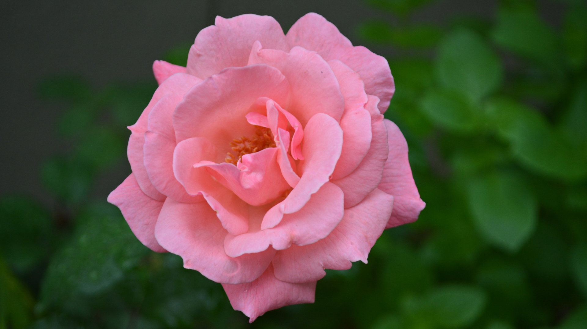

Watering: Provide roses with deep and thorough watering, ensuring at least one inch of water per week. Water at the base to prevent wetting the foliage. Sunlight: Roses thrive in full sunlight, so choose a location with at least six hours of direct sunlight per day. Soil: Plant roses in well-draining soil rich in organic matter, maintaining a slightly acidic to neutral pH level. Hardiness:** Consider your local hardiness zone when selecting rose varieties, as different roses are suitable for different climates.
